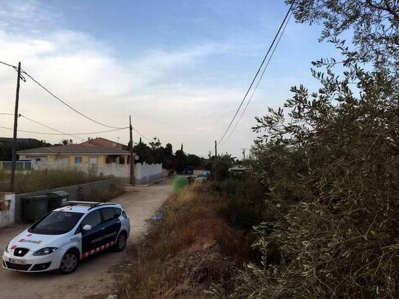

Security forces dominating terrorists in Kashmir, says JaitleyHe said the Kashmir issue had become complicated because of cross-border support to terrorists and also
because local groups.Union Minister Arun Jaitley on Sunday said security forces, with their resolute action, had established
dominance over terrorists in Jammu and Kashmir, and the Centre was firm that armed militancy must end there.He added that demonetisation
left Maoists and separatists in Jammu and Kashmir “fund starved”.Stone pelting cases decline in Jammu and Kashmir due to NIA: Rajnath SinghUnion Home Minister Rajnath Singh said on Sunday that incidents of stone-throwing have reduced in Jammu and Kashmir
due to the arrest of separatists and crackdown on terror-funding in the Valley by the NIA.Reading President Kovind’s guest listCongress leaders stayed away, though other Opposition leaders called on him
International News
120 gas canisters found for ‘one or more’ attacks in Barcelona

Police said on Sunday they have found more than 120 gas canisters in a house in Alcanar, where suspects of this week’s twin assaults in Spain
were believed to be building bombs for “one or more” attacks in Barcelona.“We’re starting to see clearly that [the Alcanar house]
was the place where they were preparing explosives for one or more attacks in the city of Barcelona,” police chief of Catalonia
region Josep Lluis Trapero told journalists.On the eve of the attack in Barcelona, an explosion had
occurred at the house about 200 km south of the city, and police believe it was detonated in error by the suspected jihadists.Ten to die over plot to kill Sheikh HasinaDHAKA: A Dhaka court has sentenced 10 people to death over a plot to kill Sheikh Hasina in 2000, when she first became
the Prime Minister after over two decades of the party’s bloody ouster from power. The Speedy Trial Tribunal- 2 of Dhaka also
sentenced nine people to 20 years in prison over explosives charges under the verdict delivered on Sunday .Of the 25 accused in the two
cases filed over an attempted murder and explosives, Harkat-ul-Jihad al-Islami chief Mufti Abdul Hannan has already been executed in
another case. Hannan was hanged over the grenade attack on former British envoy Anwar Choudhury in Sylhet.Iraq starts offensive to take back Tal Afar from Islamic StateIraqi security forces launched an offensive to take back the city of Tal Afar on Sunday, their next objective in the Thousands protest in Hong Kong over jailing of democracy activistsThousands of people marched in sweltering temperatures above 30 degrees Celsius (86°F) to the Court of Final Appeal
Entertainment News
Taking a spinGame of Thrones fans had much to cheer about earlier this year, even before the seventh — and penultimate — season aired last month.
According to multiple reports, HBO had already set in motion plans to continue the humongous success of the show by developing as many
as four spin-off shows. Later, according to a report in Rolling Stone, Casey Bloys, president of programming at HBO, clarified
that the network is weighing as many as five possible ideas as the foundation for the prequel.However, most probably only one spin-off
series would make it to air.
<
Finding WoodyMany moons ago, during a balmy Singapore evening,
I won an informal quiz conducted by a venerable quiz master from
Kuala Lumpur. My friend, who was on the losing side, felt the sting of
the loss so much that he relocated to Kurosawa land. His parting shot
was that my narrow win was due to a preponderance of questions on Woody Allen, a filmmaker he dismissed as an Ingmar
Bergman rip-off.Notes of dawnArati Ankalikar Tikekar to perform at UdayswarAnando Brahma: Plenty of laughsWith some well-conceived sequences, ‘Anando Brahma’ breaks clichés associated with horror.